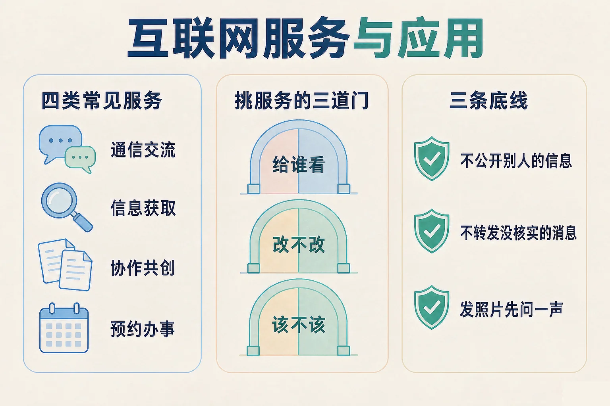
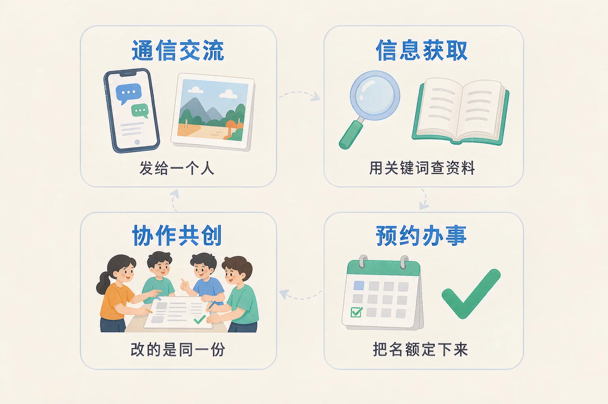
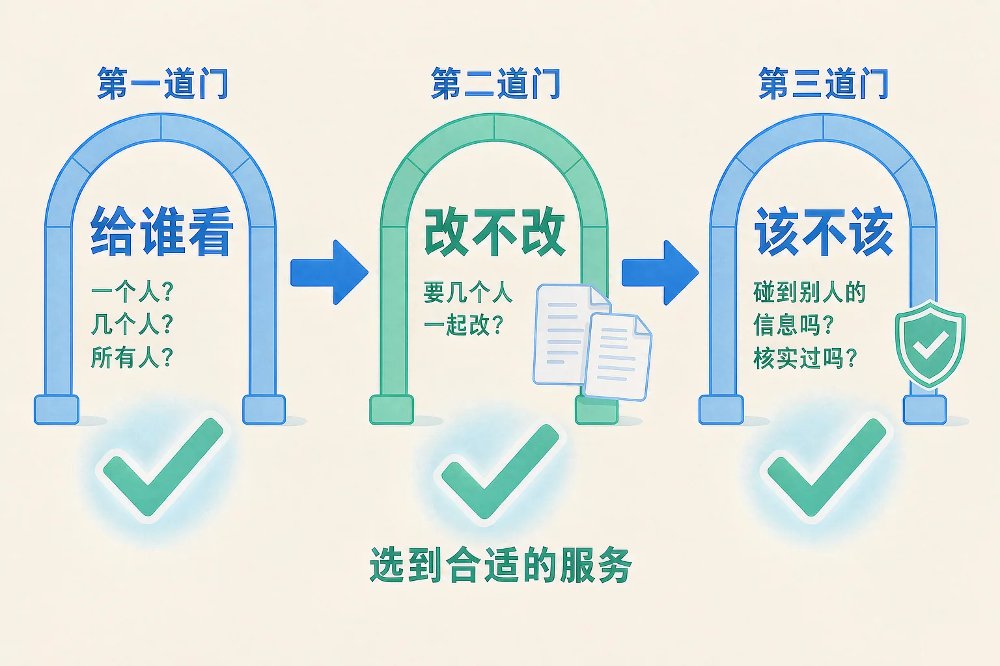

Gallery
v1.0.0 · skill v7.22.0
小学五年级 · 互联网与人工智能
同样是上网，为什么发给奶奶的照片要用一种服务，查资料又要用另一种？

选一个你真正好奇的问题，后面的动手活动都会围着它转。
选择或输入后，这节课会围绕你的问题展开。
先凭直觉选一个，选完立刻看到解释——错了也没关系，正好知道要重点听哪里。
1. 下面哪件事，适合用「只把消息发给一个人」这类服务？
发给一个人、一个小群，用通信交流类的服务。通知全校要发给很多人，查资料又是另一回事。错因提醒：常见错误是把「发给谁」和「发什么」搞混——先看要给几个人看，服务的类型基本就定了。
2. 想知道下一班公交车还有几站到，哪种做法最直接？
「现在到哪儿了」这种随时在变的信息，只有实时查询类服务答得上来。错因提醒：容易误认为「上网查一查都一样」。搜出来的是别人以前写好的文章，回答不了此刻的问题。
3. 有同学把班里另一位同学的手机号，发到了所有人都能看到的地方。这样做最主要的问题是什么？
手机号是别人的个人信息。要不要公开、给谁看，得由他自己说了算。错因提醒：「反正大家都是同学」是最常见的错误想法——信息一旦公开出去，就收不回来了。
为什么要学这一课？
我们天天在网上传消息、查资料，其实已经在用互联网服务了（And）；可同一件事换一种服务做，效果会差很远，用错了还可能伤到别人（But）；所以我们要认出工具箱里有哪几样，并且学会挑最合适的那一样（Therefore）。
互联网服务，简单说就是别人做好、放在网上给我们用的功能。常用的可以分成四大类。
💬 通信交流
把消息、照片、语音，单独发给某个人或一个小群。
🔎 信息获取
用关键词去查，把已经有人写好的资料找出来。
📄 协作共创
几个人同时改同一份文档，始终只有一份最新版。
📅 预约办事
在网上把时间、名额定下来，定完就算数。

🔍 深层理解 换个角度再看一遍这件事，看看能不能说出背后的原理。
看见它：打开家里的手机看看：你家的每一件线上小事，背后都属于这四类里的某一类。
比较它：同一件事往往能被好几类服务勉强办成——区别不在「能不能」，而在「合不合适」。
迁移它：以后遇到一个新需求，先别急着打开某个应用，先判断它属于哪一类，再去找对应那一类里的服务。
先点上面任意一个需求，再从下面四种服务里点出最合适的那一种。四道都接对，就通关了。
先选一个需求。
服务那么多，怎么挑才不会挑错？给你三道门，一个一个走过去。

只按「哪个用起来最方便」来挑。方便是好事，但方便排在三道门后面。一个用起来很方便的服务，如果把范围放得太开、或者碰到别人的信息，那它就不合适。
每一组都有两个办法，看起来都能把事办成。请点出你认为更合适的那个，再看解释。
办法 A
—
办法 B
—
读一读这件事，点出你认为更合适的那个办法。
题目：班级要办春游，需要一张报名表，让三十个同学自己填，还要能随时看到最新的人数。该用哪一类互联网服务？请说明理由。
有同学提议「一人填一份，填完都发到群里」。这样确实每个人都能填，可最后会出现三十份不一样的文件，哪一份才是最新的，谁也说不清。办事的过程一乱，结果就容易出错。
先凭直觉选一个，选完立刻看到解释——错了也没关系，正好知道要重点听哪里。
1. 挑互联网服务的时候，最重要的判断标准是什么？
方便只是最后才考虑的一条。先要看范围、版本和安全这三道门过得去不过去。错因提醒：最常见的是「方便优先」，觉得能省事就好——方便的服务如果范围放得太开，反而容易出问题。
2. 小组四个人要同时改一份班级公约，哪种做法最合适？
大家改同一份，谁改了什么一眼看得见，永远只有一份最新版。错因提醒：容易误认为「反正最后合在一起就行」。四个版本混在一起的时候，最要紧的那句到底是谁改的，就说不清了。
3. 在网上看到一条标题很吓人的「紧急通知」，最稳妥的做法是什么？
没核实就转发，等于帮别人把没影的话传得更远。想帮大家，先核实。错因提醒：这里最常见的错误想法是「我是在做好事」——好意不等于准确，转发的人也要为传出去的话负责。
先点一张卡片，再点你认为对的那个筐。每放一次都会立刻告诉你理由。
点一张卡片开始归位。
放完以后想一想，说给同桌听：
两个「不该放到网上」的筐里，装的是两件不一样的事：一件碰到了别人的个人信息，一件是自己没核实过。你还能各举一个身边的例子吗？
先凭直觉选一个，选完立刻看到解释——错了也没关系，正好知道要重点听哪里。
1. 有个人只想查一下公交到站，那个服务却要他填手机号、家庭住址，还要开摄像头。你会怎么办？
办一件小事却要走这么多信息，说明这个服务要的东西超出了它该要的范围。错因提醒：常见错误是「反正要用就全填了」。信息给得越多，将来收不回来的也越多。
2. 妈妈想在手机上预约一次体检，这属于哪一类互联网服务？
预约的本质是把一个时间或名额在网上定下来，定完就算数——这是预约办事类服务。错因提醒：容易和「信息获取」搞混。查资料只是看一看，预约是真的占掉一个名额，办完不能当没发生。
3. 班级合影里有同学的脸，要把它发给别人看，最稳妥的第一步是什么？
照片里是别人的样子，发到哪儿、给谁看，得先问过他们。错因提醒：「先发出去，有人反对再删」是很常见的想法——可是看到的人可能已经存下来了，删掉也追不回来。
还有一条容易被忽略的：服务再方便，也要有停下来的时间。给自己定一个用网的时间边界，什么时候用、用多久，由你来定，不是由手机来定。
给别人讲一遍：请用「给谁看、改不改、该不该」这三句话，说清楚为什么把合影单独发给奶奶更稳妥。
再动一动手：列出来——把家里人在网上办的三件事写下来，各标出它属于哪一类服务。
三层练习，做完第一、二层就算通关；第三层留给愿意继续探索的同学。
⭐ 基础巩固（必做）
⭐⭐ 能力应用（必做）
⭐⭐⭐ 迁移挑战（选做）
左边是学它之前要先会的，右边是学会之后可以继续探索的，下面是同一领域的伙伴知识。
图谱正在加载：首次进入需下载知识索引（约 1–3 秒），加载完成后本行会自动消失。